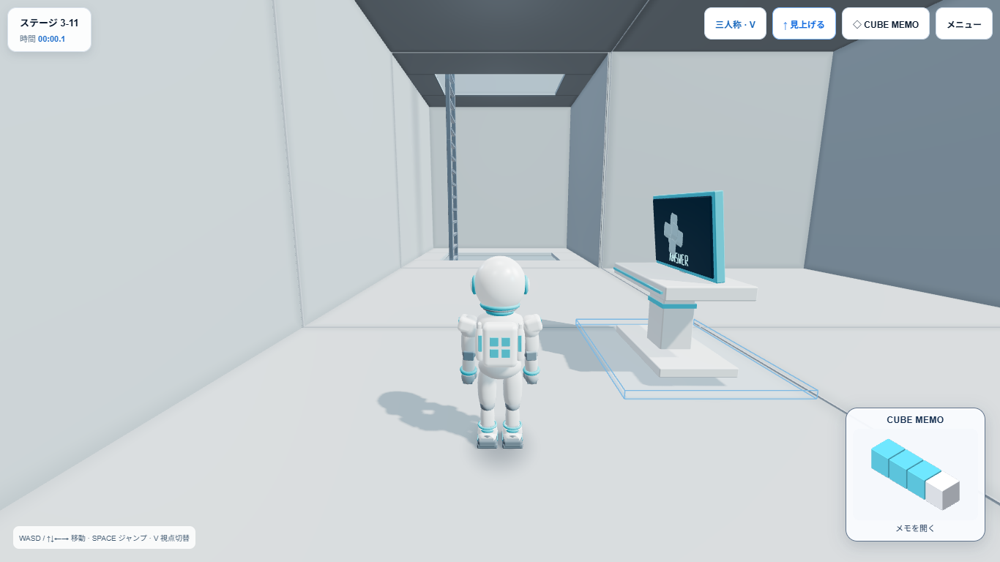
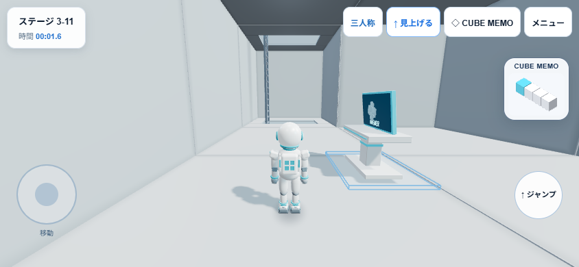

READY FOR USER QA
StageDefinition.memoのenabled／origin／canonicalCubes／hintLimitを参照します。Stage IDの数値範囲判定はなく、将来のStageでも同じCubeMemoSystemを利用できます。
Canonical = rooms − start。roomsは既に整数Voxel座標です。World Scale・Camera・初期Yawを混ぜず、軸の交換や鏡像変換はしません。逆変換 canonical + origin = rooms と正解選択肢の形状を全31問で照合しました。
Hint照合・発光の適用はSetでO(n)。現在のStandardは1回。将来のhintLimit変更にも対応しています。
既存キー icube-memo:stage_1_1 等を維持し、Stage ID単位で遅延ロード。旧v1/v2を読み込み、v2に任意hintUsesを追加しました。Undo履歴はセッション内のStage別Storeに保持。メッシュやRendererは保存しません。
NEW GAMEは既存のStage 1-1開始のままです。Memo全消去は追加していません。Retryは現在のStoreとFull表示状態を再利用します。別Stageへ移ると旧Full Panelをdisposeして描画資源・Listenerを破棄し、Mini Rendererは再利用します。
全31問：重複なし、整数、原点あり、Cube数一致、正解形一致、全正解Hint・部分正解Hint PASS。
ブラウザ代表7問：1-1／1-2／2-5／3-1／3-6／3-10／3-11。開く→配置→閉じる→最初の不正解→Hint→Retry→Reload復元 PASS。Stage A→B→Aの分離 PASS。
モバイルエミュレーション：全31問のFull/Miniタップ開閉、横画面4問で配置同期 PASS。12回のStage切替後もFull Panel・Full Canvas・Miniは各1個。ブラウザエラーなし。
自動テスト200件PASS／Production Build PASS。移動・ジャンプ・梯子・POV・LOOK UP・回答・正解・Home等の既存自動回帰も通過。これらすべての操作を本Gateで実機再実行したという意味ではありません。
モバイル相当の短時間計測：約60.4fps。Miniは1 geometry、0 textures。全31問のMeshは生成せず、現在Stageだけ描画します。既存の静止時dirty renderを維持。
実機スマートフォン・YouTubeホスト・長時間メモリ耐久試験は未確認。短時間のCanvas非増殖チェックは長時間リーク不在の保証ではありません。既存500kBチャンク警告は継続。
How To Playは指示どおり未変更のため、従来の「Stage 1-1のみ」のPrototype補足は残っています。機能上の展開範囲は全31問です。
| Stage | Save ID | Cube count | Origin (stage voxel) | Canonical | Hint test |
|---|---|---|---|---|---|
| 1-1 | stage_1_1 | 13 | 0, 0, 0 | PASS | PASS |
| 1-2 | stage_1_2 | 17 | 0, 0, 0 | PASS | PASS |
| 1-3 | stage_1_3 | 13 | 0, 2, 0 | PASS | PASS |
| 1-4 | stage_1_4 | 13 | 0, 2, 0 | PASS | PASS |
| 1-5 | stage_1_5 | 13 | 0, 0, 0 | PASS | PASS |
| 1-6 | stage_1_6 | 12 | 0, 0, 0 | PASS | PASS |
| 1-7 | stage_1_7 | 16 | 0, 0, 0 | PASS | PASS |
| 1-8 | stage_1_8 | 14 | 0, 2, 0 | PASS | PASS |
| 1-9 | stage_1_9 | 13 | 0, 0, 0 | PASS | PASS |
| 1-10 | stage_1_10 | 13 | 0, 0, 0 | PASS | PASS |
| 2-1 | stage_2_1 | 12 | 0, -1, 0 | PASS | PASS |
| 2-2 | stage_2_2 | 4 | 1, 0, 0 | PASS | PASS |
| 2-3 | stage_2_3 | 11 | 0, -1, 0 | PASS | PASS |
| 2-4 | stage_2_4 | 11 | 0, -1, 0 | PASS | PASS |
| 2-5 | stage_2_5 | 8 | 0, 1, 0 | PASS | PASS |
| 2-6 | stage_2_6 | 11 | 0, -1, 0 | PASS | PASS |
| 2-7 | stage_2_7 | 12 | 0, -1, 0 | PASS | PASS |
| 2-8 | stage_2_8 | 6 | 0, 3, 0 | PASS | PASS |
| 2-9 | stage_2_9 | 13 | 0, -1, 0 | PASS | PASS |
| 2-10 | stage_2_10 | 12 | 0, -1, 0 | PASS | PASS |
| 3-1 | stage_3_1 | 12 | 0, 0, 0 | PASS | PASS |
| 3-2 | stage_3_2 | 8 | 0, 0, 0 | PASS | PASS |
| 3-3 | stage_3_3 | 10 | 0, -2, 0 | PASS | PASS |
| 3-4 | stage_3_4 | 12 | 0, -1, 0 | PASS | PASS |
| 3-5 | stage_3_5 | 13 | 0, 0, 0 | PASS | PASS |
| 3-6 | stage_3_6 | 14 | 0, 0, 0 | PASS | PASS |
| 3-7 | stage_3_7 | 15 | 0, 0, 0 | PASS | PASS |
| 3-8 | stage_3_8 | 18 | 0, 0, 0 | PASS | PASS |
| 3-9 | stage_3_9 | 11 | 0, 0, 0 | PASS | PASS |
| 3-10 | stage_3_10 | 19 | 0, 0, 0 | PASS | PASS |
| 3-11 | stage_3_11 | 12 | 0, 1, 0 | PASS | PASS |

